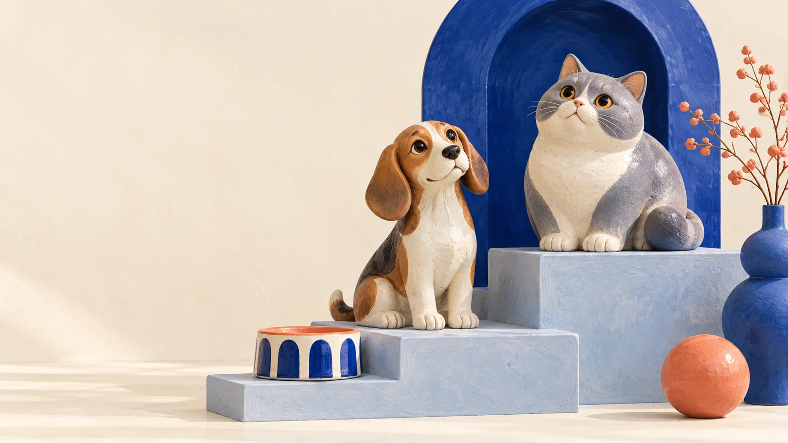

Терапия
Первичный приём и обсуждение состояния питомца.
Карачарово • ветеринарная клиника
Для тех, кто дорог.МобиДок на 2-й Карачаровской: врачебный приём, диагностика и опубликованные ориентиры стоимости.

01 / Знакомство
В карточке клиники представлены терапия, хирургия, лабораторные исследования и УЗИ. Выберите повод обращения — и подготовьте короткое сообщение для записи.
02 / Повод обратиться
Первичный приём и обсуждение состояния питомца.
Запросить консультацию, подготовку и индивидуальный расчёт.
Согласовать исследование и подготовку с клиникой.
Уточнить доступность нужного анализа и условия сдачи.
Обсудить документы и возможность процедуры.
Возможность услуги, приём специалиста и подготовка подтверждаются клиникой при записи.
03 / До встречи
Четыре небольших дела перед визитом. Отметьте готовое и составьте обращение — его можно скопировать или использовать при звонке.
0 из 4 пунктов отмечено
04 / Стоимость
Опубликовано в карточке клиники; обновление прайса — 12 сентября 2026. Состав услуги и итоговую сумму подтвердите перед записью.
Время приёма уточните по телефону
Ещё несколько слов
Позвоните в клинику или откройте её действующий канал. Конструктор обращения на этой странице только готовит текст: запись подтверждает сотрудник клиники.
Ветеринарный паспорт, имеющиеся результаты исследований и список текущих назначений. Подготовку к конкретному исследованию уточните у клиники.
Да, спросите о составе услуги и итоговой сумме при записи. Если опубликован ориентир, он не заменяет индивидуальное подтверждение клиники.